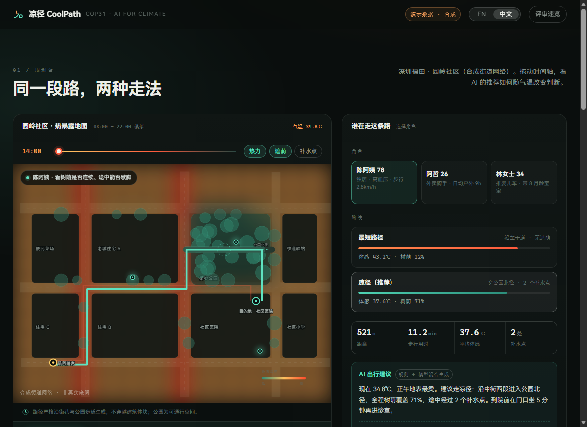
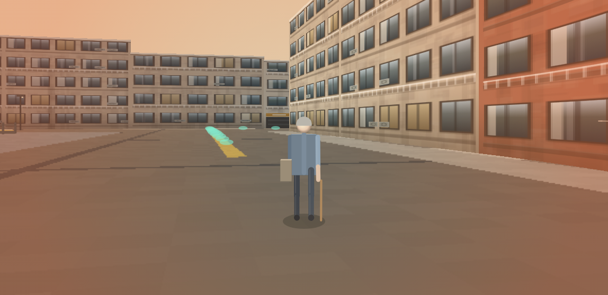

凉径 CoolPath 是一个面向极端高温的社区气候适应原型：用 AI 把「热风险」翻译成两个可执行的动作 —— 给脆弱人群一条最低热暴露的步行路线，给社区工作者一张今天该先敲谁家门的走访名单。 单文件 HTML，零依赖、可离线运行。
热暴露规划台 + 街景感知 + 社区关怀视图 + 可进入的第三人称模拟世界。三条路线对比、按角色给出建议、终点天柱信标，中英双语。
进入作品把城市级热公平指挥台与街道级凉径规划合并：24 街区热风险排序、预算优化，下钻到街巷里的一条凉路。中 / 英 / 土三语言。
进入合并版
